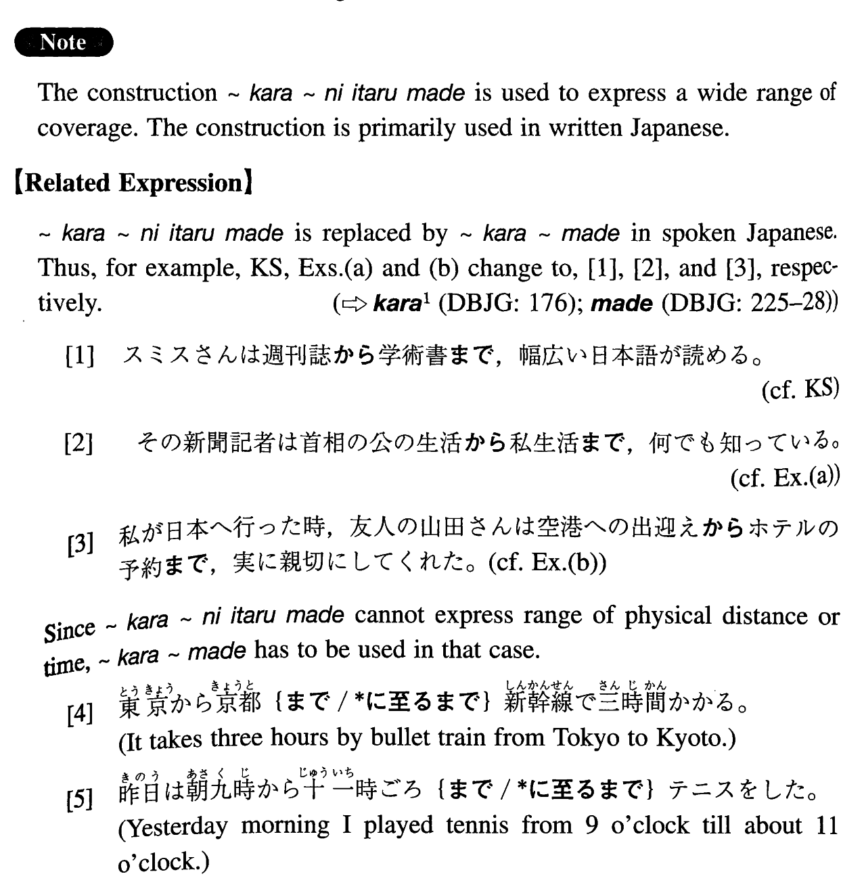

から~に至るまで (I. 99)
- (ks).
- スミスさんは週刊誌から学術書に至るまで、幅広い日本語が読める。
- Mr. Smith can read Japanese widely, ranging from weekly magazines to scholastic books.
- (a).
- その新聞記者は首相の公の生活から私生活に至るまで、何でも知っている。
- That newspaper reporter knows everything about the premier, ranging from his public life to his private life.
- (b).
- 私が日本へ行った時、友人の山田さんは空港への出迎えからホテルの予約に至るまで、実に親切にしてくれた。
- When I went to Japan, my friend Mr. Yamada was very kind to me. He did everything from picking me up at the airport to making the hotel reservation for me.
- (c).
- その女の人は私に家族のことから自分の悩みに至るまで、細かに話した。
- That lady told me everything in detail, starting with her family and ending with the worries of her life.
- (d).
- 社長が現れた時には、守衛から副社長に至るまで、門の前で待っていた。
- When the president of the company arrived, everyone from the guards to the vice-president was waiting in front of the gate.
- (e).
- ルーシーは靴から帽子に至るまで、緑の装束だった。
- Lucy was dressed in green, from her shoes to her hat.
